Key Metrics
The Problem
Fish-farm water quality — pH, dissolved oxygen, ammonia, and temperature — can drift into dangerous ranges between manual checks. Without continuous sensing and prompt alerts, stock health is at risk.
AquaWatch closes that gap with a scheduled sensor pipeline: simulated readings every 5 minutes across the ponds, a time-series store, threshold checks with cooldowns, and email plus SMS notification paths.
Architecture
Hover or tap any component to see details

Approach & Implementation
- Simulation: Python sensor simulator covers 3 ponds by default (1–5 target) across pH, dissolved oxygen, ammonia, and temperature at 5-minute sampling with a 10% anomaly rate.
- Ingestion: Airflow DAG ingest_sensor_data runs every 5 minutes, writing batches via execute_batch with page_size=100.
- Storage: TimescaleDB hypertable sensor_readings plus a dedicated alerts table hold the time series and alert history.
- Alerting: AlertManager checks ammonia high 1.0 / critical 2.0 ppm, pH high 8.2 / 8.8, dissolved oxygen low 5.0 / 4.0, temperature high 28.0 / 30.5, with a 15-minute cooldown per parameter per pond; real SMTP email plus a mocked Twilio-like SMS log.
- Serving: Grafana 10.1.5 dashboards visualize ponds and alerts, with an optional FastAPI layer exposing /readings, /alerts, and /analytics.
- PRD targets: Alert latency under 5 minutes and 95%+ uptime in local testing.
Challenges & Solutions
Challenge: Alert fatigue
Threshold crossings on noisy sensor streams can repeat every cycle, spamming operators with duplicate pages.
Solution: Per-pond cooldowns
Added a 15-minute cooldown per parameter per pond so a sustained breach pages once, then re-arms only after the window clears.
Challenge: Dual notification paths
Operators need email and SMS, but SMS delivery varies by provider and environment.
Solution: Real SMTP plus mocked SMS
Sends alerts over real SMTP email and logs SMS through a mocked Twilio-like path, keeping both channels exercised without a live carrier dependency.
Outcome
AquaWatch ingests simulated pond telemetry on a 5-minute Airflow schedule into TimescaleDB, evaluates water-quality thresholds, and notifies operators over email and SMS with Grafana dashboards on top.
PRD targets are alert latency under 5 minutes and 95%+ uptime in local testing. Local project — no public GitHub link.